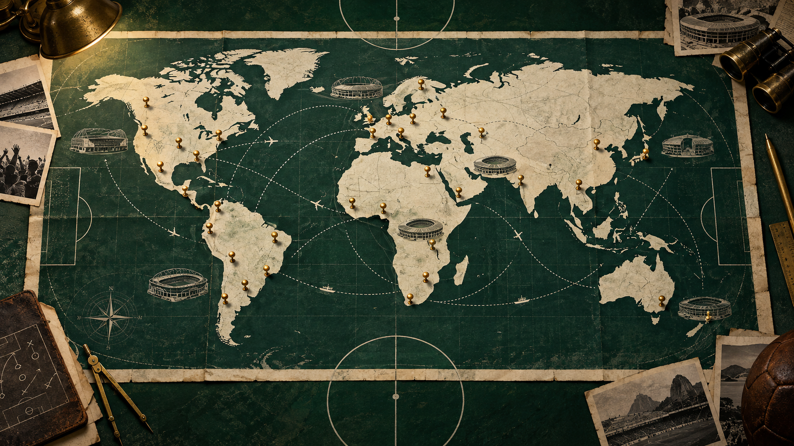

Nace el torneo
Uruguay inaugura la historia. Italia logra dos títulos consecutivos. Tras la pausa de 1942 y 1946 por la guerra, Uruguay gana el decisivo partido de 1950 y Alemania Federal sorprende en 1954.
Uruguay organizó la primera edición con trece selecciones. Todos los partidos se jugaron en Montevideo y la selección local venció 4–2 a Argentina en la final. Aquella escala compacta contrasta con las 48 selecciones y las tres naciones anfitrionas de 2026.
Uruguay inaugura la historia. Italia logra dos títulos consecutivos. Tras la pausa de 1942 y 1946 por la guerra, Uruguay gana el decisivo partido de 1950 y Alemania Federal sorprende en 1954.
Brasil gana tres de seis ediciones y proyecta figuras globales. La televisión acerca el torneo a millones de hogares; Inglaterra, Alemania Federal y Argentina también celebran como anfitriones.
El torneo pasa a 24 y luego a 32 selecciones. México se convierte en la primera nación en organizar dos ediciones y 2002 lleva el Mundial por primera vez a Asia con una sede compartida.
Sudáfrica organiza la primera edición africana. Aparecen la tecnología de línea de gol y el VAR, mientras España y Francia se suman o regresan al grupo de campeones.
Canadá, México y Estados Unidos comparten la primera edición de 48 selecciones y 104 partidos. España vence 1–0 a Argentina en la prórroga y alcanza su segundo título.
Europa y Sudamérica dominaron las primeras décadas como sedes. Después llegaron Norteamérica, Asia y África. Cada traslado modificó horarios, arquitectura, audiencias y la manera en que el torneo representó al país anfitrión.

De 13 participantes en 1930 a 48 en 2026.
De crónicas y radio a televisión, satélite y plataformas digitales.
Tarjetas, sustituciones, línea de gol y revisión por video.
De una sola ciudad central a torneos multinacionales.